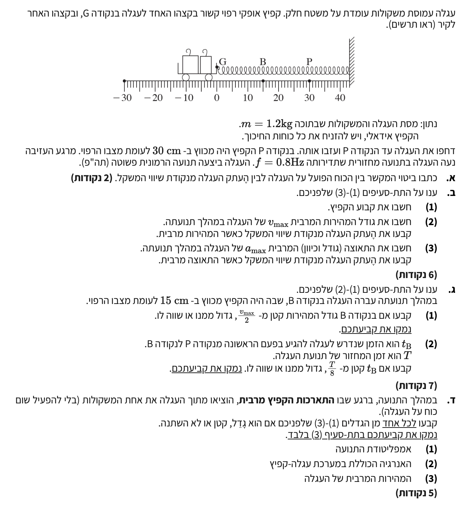

עגלה קשורה לקפיץ ומבצעת תנועה הרמונית פשוטה אופקית וחלקה.
ביטוי הקושר בין הכוח שפועל על העגלה ובין העתק העגלה מנקודת שיווי המשקל המוגדרת.
על פי דף הנוסחאות, בתנועה הרמונית פשוטה הכוח המחזיר פרופורציונלי להעתק הגוף מנקודת שיווי המשקל ומנוגד לו בכיוונו. הקבוע $c$ במשוואה מייצג את הקבוע המאפיין את המערכת. במקרה של עגלה המחוברת לקפיץ אידאלי אופקי, הקבוע הזה הוא קבוע הקפיץ $k$. לכן, הביטוי המקשר בין הכוח וההעתק הוא חוק הוק:
מסת העגלה והמשקולות: \(m = 1.2 \text{ kg}\). תדירות התנועה: \(f = 0.8 \text{ Hz}\).
דחפו את העגלה עד נקודה P (כיווץ של $30 \text{ cm}$) ומשם שוחררה ממנוחה. לכן המשרעת (אמפליטודה) היא $A = 0.3 \text{ m}$.
בסעיפי המשנה נדרש למצוא את קבוע הקפיץ $k$, גודל ומיקום המהירות המרבית $v_{\text{max}}$, וגודל ומיקום התאוצה המרבית $a_{\text{max}}$.
תחילה נחשב את התדירות הזוויתית \(\omega\):
כעת, נראה מדוע הקבוע \(c\) של תנועה הרמונית שווה לקבוע הקפיץ \(k\).
בתנועה הרמונית פשוטה, הכוח המחזיר השקול מוגדר כ- \(\sum F = -cx\), כאשר \(x\) הוא ההעתק מנקודת שיווי המשקל.
במערכת שלנו (גוף המחובר לקפיץ אופקי), הכוח היחיד הפועל בציר התנועה הוא כוח הקפיץ. לפי דף הנוסחאות, גודל הכוח האלסטי (חוק הוק) הוא \(F_s = k\Delta \ell\).
מעבר מהגודל לכיוון: ההתארכות/התכווצות של הקפיץ, \(\Delta \ell\), מתייחסת לנקודת הרפיון, שבתנועה הרמונית אופקית מתלכדת עם נקודת שיווי המשקל (לכן \(\Delta \ell = |x|\)). עם זאת, הכוח של הקפיץ פועל בכיוון הפוך להעתק הגוף. למשל, אם העגלה הוזזה ימינה (\(x > 0\)), הקפיץ מפעיל כוח שמאלה (כיוון שלילי). לכן, אם נכתוב את חוק הוק כמשוואה וקטורית בציר \(x\), נקבל ששקול הכוחות הוא:
אם נשווה את שני הביטויים עבור הכוח (\(\sum F = -cx\) לעומת \(\sum F = -kx\)), נקבל מיד כי:
כלומר, במערכת קפיץ, הקבוע המחזיר \(c\) הוא פשוט קבוע הקפיץ \(k\). נחלץ את \(k\) ממשוואת התדירות הזוויתית \(\omega = \sqrt{\frac{c}{m}}\):
\(\omega^2 = \frac{k}{m} \implies k = m \omega^2\). נציב את הנתונים:
כדי להבין היכן המהירות היא מרבית, נשתמש בחוק שימור האנרגיה המכנית. במערכת שלנו פועל בכיוון התנועה רק כוח משמר (כוח הקפיץ), ולכן האנרגיה המכנית הכוללת של המערכת נשמרת קבועה. האנרגיה הכוללת מורכבת מאנרגיה קינטית (\(E_k\)) ומאנרגיה פוטנציאלית אלסטית של הקפיץ (\(U_{sp}\)):
מכיוון שסכום האנרגיות קבוע, האנרגיה הקינטית תהיה מרבית בדיוק במקום שבו האנרגיה הפוטנציאלית היא מינימלית. על פי הנוסחה לאנרגיה פוטנציאלית אלסטית מדף הנוסחאות:
(\(\Delta x\) הוא העיוות של הקפיץ, ובתנועה הרמונית אופקית הוא שווה להעתק \(x\)). ניתן לראות שהערך המינימלי האפשרי לאנרגיה הפוטנציאלית הוא אפס (שכן היא תלויה בהעתק בריבוע), וזה קורה כאשר ההעתק הוא אפס (\(x = 0\)), כלומר בנקודת שיווי המשקל. בנקודה זו, הקפיץ רפוי, כל האנרגיה של המערכת היא קינטית, ולכן המהירות שם היא מקסימלית.
אם נציב \(x = 0\) בנוסחת המהירות כתלות במקום, נקבל מיד את הקשר למשרעת:
כעת, נציב את הערכים שנתונים וחישבנו ונפתור:
התאוצה תלויה בכוח, ולכן גודלה הוא מרבי במקומות בהם הכוח המחזיר הוא מרבי, כלומר בקצות המהלך (נקודות הקיצון) בהם ההעתק הוא המשרעת (\(x = \pm A\)). נציב בנוסחת התאוצה:
כעת נציב את הנתונים שלנו על מנת למצוא את גודלה:
כיוון התאוצה יהיה תמיד כלפי נקודת שיווי המשקל (מנוגד להעתק באותה נקודה).
בנקודה B הקפיץ מכווץ ב- $15 \text{ cm}$. כלומר ההעתק הוא מחצית המשרעת: \(x = 0.15 \text{ m} = \frac{A}{2}\).
לקבוע האם גודל המהירות בנקודה זו גדול, שווה, או קטן מחצי המהירות המרבית, ולהעריך את הזמן שלקח לה להגיע לשם מרגע העזיבה בהשוואה ל- \(\frac{T}{8}\).
נציב את ההעתק $x = \frac{A}{2}$ לנוסחת המהירות כתלות במקום:
הביטוי $\omega A$ הוא בעצם מהירותנו המרבית ($v_{\text{max}}$). לכן נקבל כי:
מכיוון שבזמן השחרור מנקודת הקיצון (\(t=0\)) ההעתק הוא \(x=A\), נציב זאת בנוסחת המיקום ונמצא כי פאזת ההתחלה היא \(\varphi = 0\). לכן משוואת המקומו מוצבת כ-\(x = A\cos(\omega t)\). העגלה נדרשת להשיג את ההעתק $x = \frac{A}{2}$ לראשונה. נציב זמן הגעה $t_B$:
נפתור למציאת הזווית $\omega t_B$ (ברדיאנים):
ידוע כי $\omega = \frac{2\pi}{T}$. נציב זאת כדי לחשב את משך הזמן הנדרש:
ברגע התארכות הקפיץ המרבית (נקודת קיצון, שם גודל המהירות אפס), מוציאים אחת מהמשקולות. המסה $m$ קטנה. הסרתה מתבצעת ללא הפעלת כל כוח חיצון על העגלה.
לקבוע האם האמפליטודה, האנרגיה הכוללת והמהירות המרבית לא ישתנו, יגדלו או יקטנו, ולנמק במפורש על סמך שינויי גדלים (עם נימוק פורמלי נדרש במיוחד לחלק 3).
(1) אמפליטודת התנועה - לא תשתנה:
במצב של ההתארכות המרבית, האנרגיה הקינטית היא אפס והאנרגיה כולה פוטנציאלית אלסטית (הנקבעת לפי המיקום באותו רגע). מכיוון שלא הופעל שום כוח על העגלה שתשנה את מיקומה ומכיוון שמצב קבוע הקפיץ נותר ללא שינוי, ערכו של ההעתק המרבי באותו רגע עתה מהווה את האמפליטודה החדשה, הרי שנקודת ההתחלה זוהי הנקודה עצמה.
(2) האנרגיה הכוללת במערכת עגלה-קפיץ - לא תשתנה:
בנקודת הקיצון, המהירות אפס. לכן אין למערכת אנרגיה קינטית. כל האנרגיה של המערכת באותו רגע מצויה באנרגיה הפוטנציאלית האלסטית (\(U_{sp} = \frac{1}{2} k A^2\)). הוצאת המסה העליונה לא כרוכה בביצוע שום עבודה המשנה את אנרגיה הקפיץ או מהירות המערכת, כי לשתיהן כרגע אין מהירות. האנרגיה הכללית (המכנית) תישאר קבועה לאורך כל תנועת המערכת החדשה.
(3) המהירות המרבית של העגלה - תגדל:
כפי שהראנו בשני התת-סעיפים הקודמים האנרגיה המכנית הכוללת של המערכת ($E$) נשמרה ולא השתנתה. במעבר דרך נקודת שיווי המשקל, האנרגיה נהפכת לקינטית במלואה. מחוק שימור האנרגיה המכנית בנקודת שיווי המשקל:
מכיוון שהמסה $m$ של העגלה קטנה עקב הוצאת המשקולת (והאנרגיה $E_{\text{tot}}$ נשארה קבועה), הרי שהמהירות המרבית $v_{\text{max}}$ חייבת לגדול כדי שערך הביטוי יישאר יציב. שכן גדלים אלו נמצאים ביחס הפוך במשוואה זו.